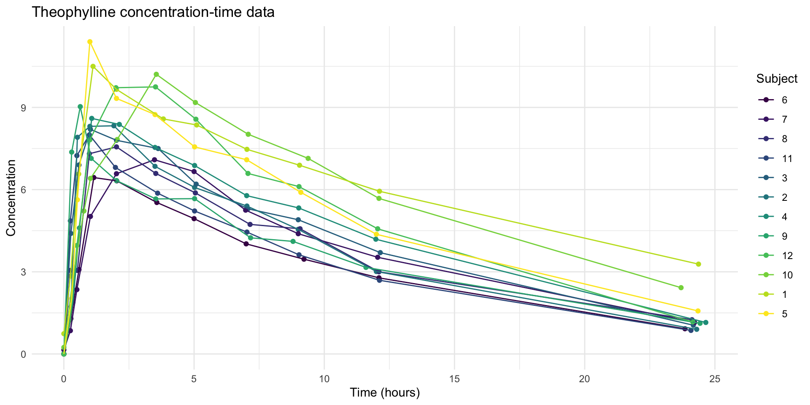
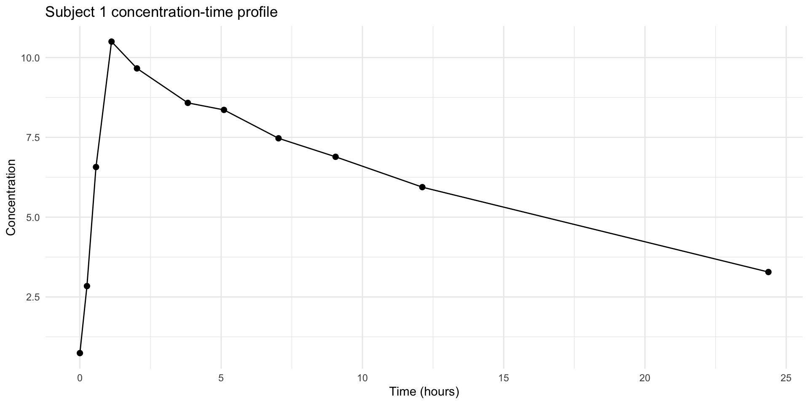
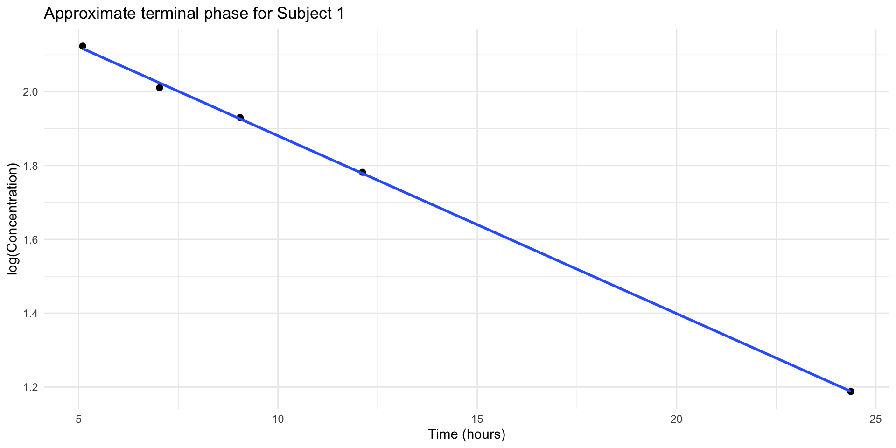
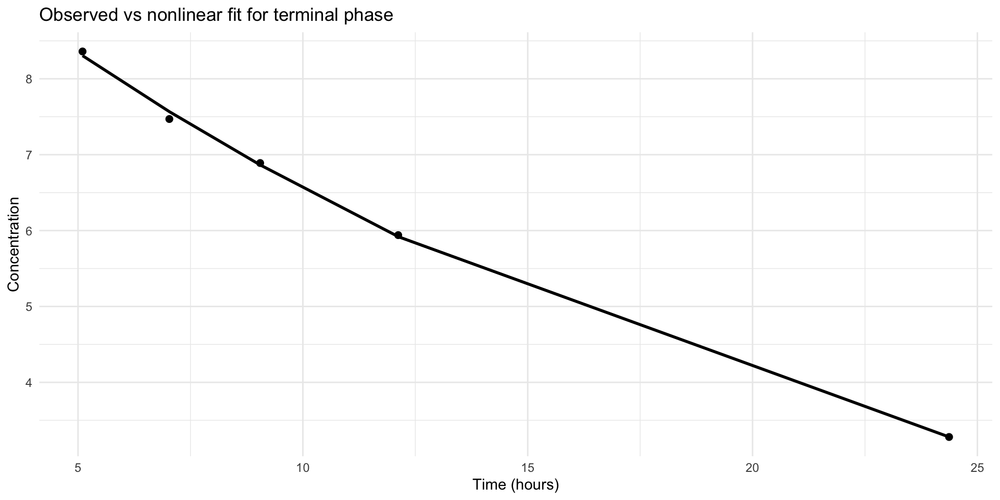
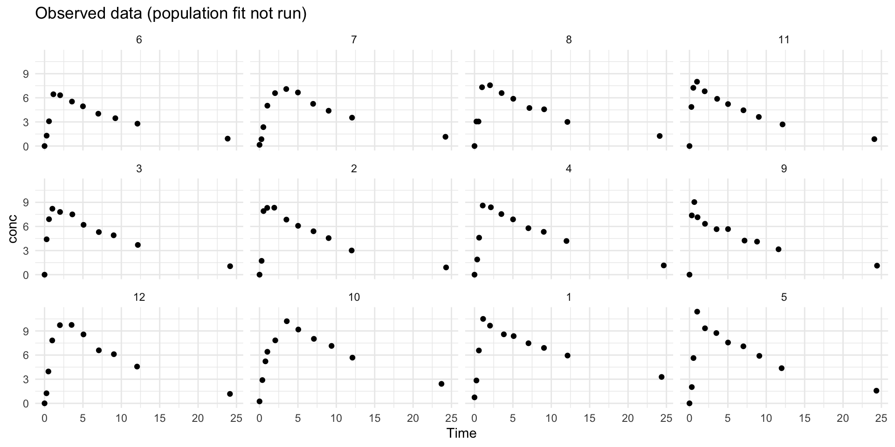
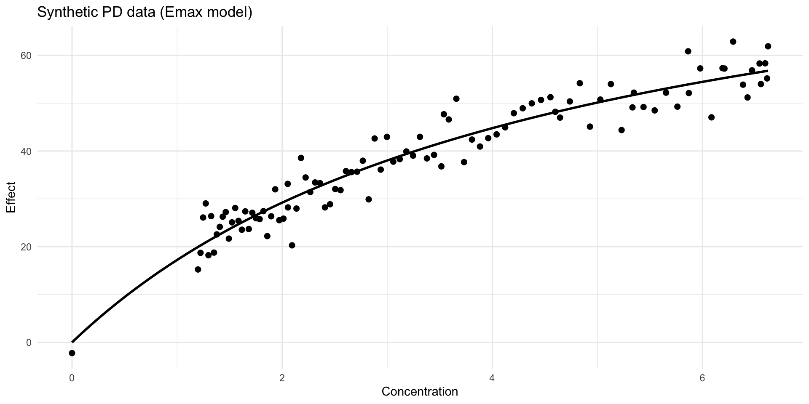

Subject Wt Dose Time conc
1 1 79.6 4.02 0.00 0.74
2 1 79.6 4.02 0.25 2.84
3 1 79.6 4.02 0.57 6.57
4 1 79.6 4.02 1.12 10.50
5 1 79.6 4.02 2.02 9.66
6 1 79.6 4.02 3.82 8.58Introduction to PK/PD Modeling
A systems biology perspective with R
Instructor
Welcome
This lecture introduces pharmacokinetic and pharmacodynamic modeling for graduate students in biomedical sciences and systems biology. The emphasis is on conceptual understanding, practical implementation in R, and how modeling choices relate to biological interpretation.
We will use the built-in Theoph dataset to demonstrate core ideas in model fitting, visualization, and interpretation.
Learning objectives
By the end of this lecture, students should be able to:
- distinguish pharmacokinetics from pharmacodynamics
- explain the meaning of common PK parameters such as clearance, volume, absorption rate, and elimination rate
- fit simple PK models in R using
lmandnls - explain the motivation for mixed-effects models and fit a basic model with
nlme - connect PK models to PD models such as the Emax model
- interpret results in a biologically meaningful way
Why PK/PD in systems biology?
PK/PD modeling fits naturally within systems biology because both fields focus on dynamic processes, parameter estimation, and mechanistic interpretation.
A pharmacokinetic model tracks how drug concentration changes over time. A pharmacodynamic model relates drug concentration to biological effect. Together, PK/PD models connect drug input to system response.
This is useful in:
- dose selection
- translational modeling
- biomarker analysis
- experimental design
- hypothesis generation about mechanism
Roadmap for today
- Core PK and PD concepts
- Theophylline dataset
- Exploratory plots
- Linear and nonlinear PK fitting
- Population modeling with
nlme - PK/PD coupling ideas
- Model diagnostics and interpretation
- Assignment for next week
Prerequisites — how to follow this lecture
- No R experience required. Slides include runnable code, but heavy fits are precomputed so class time focuses on concepts and interpretation.
- If you want to run code locally:
- R or RStudio is helpful but not required for following the slides.
- For Python users, a companion notebook is available in the repo (recommended).
- Quick R primer (copy/paste to try a few lines):
- If package installation is an issue, use the pre-rendered figures included in the slides.
PK versus PD
Pharmacokinetics (PK) asks: what does the body do to the drug?
Key processes include:
- absorption
- distribution
- metabolism
- elimination
Pharmacodynamics (PD) asks: what does the drug do to the body?
Key questions include:
- what is the maximal effect?
- what concentration is needed for half-maximal effect?
- how delayed is the response?
- is the response direct or indirect?
A first PK picture
For a simple one-compartment IV bolus model, concentration declines exponentially:
\[ C(t) = C_0 e^{-k_e t} \]
where:
- \(C(t)\) is concentration at time \(t\)
- \(C_0\) is the initial concentration
- \(k_e\) is the elimination rate constant
The half-life is:
\[ t_{1/2} = \frac{\ln 2}{k_e} \]
This simple model is often the starting point for understanding more realistic models.
Oral dosing and first-order absorption
For oral dosing, we often need both absorption and elimination. A standard one-compartment model with first-order absorption can be written as:
\[ C(t) = \frac{D k_a}{V(k_a-k_e)} \left(e^{-k_e t} - e^{-k_a t}\right) \]
where:
- \(D\) is dose
- \(V\) is apparent volume of distribution
- \(k_a\) is absorption rate constant
- \(k_e\) is elimination rate constant
This is closer to the structure seen in the Theoph dataset.
Slide placeholder: compartment diagram
Placeholder for instructor-added figure
Suggested diagram:
- depot compartment for oral absorption
- central compartment
- arrow labeled \(k_a\) from depot to central
- arrow labeled \(k_e\) or clearance from central outward
You can replace this slide with your own schematic.
Load the data
Subject Wt Dose Time conc
1 1 79.6 4.02 0.00 0.74
2 1 79.6 4.02 0.25 2.84
3 1 79.6 4.02 0.57 6.57
4 1 79.6 4.02 1.12 10.50
5 1 79.6 4.02 2.02 9.66
6 1 79.6 4.02 3.82 8.58
7 1 79.6 4.02 5.10 8.36
8 1 79.6 4.02 7.03 7.47
9 1 79.6 4.02 9.05 6.89
10 1 79.6 4.02 12.12 5.94
11 1 79.6 4.02 24.37 3.28
12 2 72.4 4.40 0.00 0.00
13 2 72.4 4.40 0.27 1.72
14 2 72.4 4.40 0.52 7.91
15 2 72.4 4.40 1.00 8.31
16 2 72.4 4.40 1.92 8.33
17 2 72.4 4.40 3.50 6.85
18 2 72.4 4.40 5.02 6.08
19 2 72.4 4.40 7.03 5.40
20 2 72.4 4.40 9.00 4.55
21 2 72.4 4.40 12.00 3.01
22 2 72.4 4.40 24.30 0.90
23 3 70.5 4.53 0.00 0.00
24 3 70.5 4.53 0.27 4.40
25 3 70.5 4.53 0.58 6.90
26 3 70.5 4.53 1.02 8.20
27 3 70.5 4.53 2.02 7.80
28 3 70.5 4.53 3.62 7.50
29 3 70.5 4.53 5.08 6.20
30 3 70.5 4.53 7.07 5.30
31 3 70.5 4.53 9.00 4.90
32 3 70.5 4.53 12.15 3.70
33 3 70.5 4.53 24.17 1.05
34 4 72.7 4.40 0.00 0.00
35 4 72.7 4.40 0.35 1.89
36 4 72.7 4.40 0.60 4.60
37 4 72.7 4.40 1.07 8.60
38 4 72.7 4.40 2.13 8.38
39 4 72.7 4.40 3.50 7.54
40 4 72.7 4.40 5.02 6.88
41 4 72.7 4.40 7.02 5.78
42 4 72.7 4.40 9.02 5.33
43 4 72.7 4.40 11.98 4.19
44 4 72.7 4.40 24.65 1.15
45 5 54.6 5.86 0.00 0.00
46 5 54.6 5.86 0.30 2.02
47 5 54.6 5.86 0.52 5.63
48 5 54.6 5.86 1.00 11.40
49 5 54.6 5.86 2.02 9.33
50 5 54.6 5.86 3.50 8.74
51 5 54.6 5.86 5.02 7.56
52 5 54.6 5.86 7.02 7.09
53 5 54.6 5.86 9.10 5.90
54 5 54.6 5.86 12.00 4.37
55 5 54.6 5.86 24.35 1.57
56 6 80.0 4.00 0.00 0.00
57 6 80.0 4.00 0.27 1.29
58 6 80.0 4.00 0.58 3.08
59 6 80.0 4.00 1.15 6.44
60 6 80.0 4.00 2.03 6.32
61 6 80.0 4.00 3.57 5.53
62 6 80.0 4.00 5.00 4.94
63 6 80.0 4.00 7.00 4.02
64 6 80.0 4.00 9.22 3.46
65 6 80.0 4.00 12.10 2.78
66 6 80.0 4.00 23.85 0.92
67 7 64.6 4.95 0.00 0.15
68 7 64.6 4.95 0.25 0.85
69 7 64.6 4.95 0.50 2.35
70 7 64.6 4.95 1.02 5.02
71 7 64.6 4.95 2.02 6.58
72 7 64.6 4.95 3.48 7.09
73 7 64.6 4.95 5.00 6.66
74 7 64.6 4.95 6.98 5.25
75 7 64.6 4.95 9.00 4.39
76 7 64.6 4.95 12.05 3.53
77 7 64.6 4.95 24.22 1.15
78 8 70.5 4.53 0.00 0.00
79 8 70.5 4.53 0.25 3.05
80 8 70.5 4.53 0.52 3.05
81 8 70.5 4.53 0.98 7.31
82 8 70.5 4.53 2.02 7.56
83 8 70.5 4.53 3.53 6.59
84 8 70.5 4.53 5.05 5.88
85 8 70.5 4.53 7.15 4.73
86 8 70.5 4.53 9.07 4.57
87 8 70.5 4.53 12.10 3.00
88 8 70.5 4.53 24.12 1.25
89 9 86.4 3.10 0.00 0.00
90 9 86.4 3.10 0.30 7.37
91 9 86.4 3.10 0.63 9.03
92 9 86.4 3.10 1.05 7.14
93 9 86.4 3.10 2.02 6.33
94 9 86.4 3.10 3.53 5.66
95 9 86.4 3.10 5.02 5.67
96 9 86.4 3.10 7.17 4.24
97 9 86.4 3.10 8.80 4.11
98 9 86.4 3.10 11.60 3.16
99 9 86.4 3.10 24.43 1.12
100 10 58.2 5.50 0.00 0.24
101 10 58.2 5.50 0.37 2.89
102 10 58.2 5.50 0.77 5.22
103 10 58.2 5.50 1.02 6.41
104 10 58.2 5.50 2.05 7.83
105 10 58.2 5.50 3.55 10.21
106 10 58.2 5.50 5.05 9.18
107 10 58.2 5.50 7.08 8.02
108 10 58.2 5.50 9.38 7.14
109 10 58.2 5.50 12.10 5.68
110 10 58.2 5.50 23.70 2.42
111 11 65.0 4.92 0.00 0.00
112 11 65.0 4.92 0.25 4.86
113 11 65.0 4.92 0.50 7.24
114 11 65.0 4.92 0.98 8.00
115 11 65.0 4.92 1.98 6.81
116 11 65.0 4.92 3.60 5.87
117 11 65.0 4.92 5.02 5.22
118 11 65.0 4.92 7.03 4.45
119 11 65.0 4.92 9.03 3.62
120 11 65.0 4.92 12.12 2.69
121 11 65.0 4.92 24.08 0.86
122 12 60.5 5.30 0.00 0.00
123 12 60.5 5.30 0.25 1.25
124 12 60.5 5.30 0.50 3.96
125 12 60.5 5.30 1.00 7.82
126 12 60.5 5.30 2.00 9.72
127 12 60.5 5.30 3.52 9.75
128 12 60.5 5.30 5.07 8.57
129 12 60.5 5.30 7.07 6.59
130 12 60.5 5.30 9.03 6.11
131 12 60.5 5.30 12.05 4.57
132 12 60.5 5.30 24.15 1.17What is the Theoph dataset?
The Theoph dataset is a classic dataset included with R. It contains serum theophylline concentrations measured in 12 subjects after an oral dose.
Variables include:
Subject: subject identifierWt: body weightDose: administered doseTime: time after doseconc: measured concentration
This dataset is ideal for demonstrating both individual and population PK modeling.
Inspect the data
Subject Wt Dose Time conc
6 :11 Min. :54.60 Min. :3.100 Min. : 0.000 Min. : 0.000
7 :11 1st Qu.:63.58 1st Qu.:4.305 1st Qu.: 0.595 1st Qu.: 2.877
8 :11 Median :70.50 Median :4.530 Median : 3.530 Median : 5.275
11 :11 Mean :69.58 Mean :4.626 Mean : 5.895 Mean : 4.960
3 :11 3rd Qu.:74.42 3rd Qu.:5.037 3rd Qu.: 9.000 3rd Qu.: 7.140
2 :11 Max. :86.40 Max. :5.860 Max. :24.650 Max. :11.400
(Other):66 Notice that each subject has repeated measurements over time. This repeated-measures structure is one reason mixed-effects methods are useful.
Plot all concentration-time profiles

What do we see?
Several important patterns should stand out:
- concentration rises initially after oral dosing
- concentration later declines as elimination dominates
- subjects differ in peak concentration and timing
- there is visible inter-individual variability
This immediately suggests that a single curve for all individuals may be inadequate.
Explore one subject first
To build intuition, it helps to start with a single subject.

Why start simple?
A useful modeling principle is to begin with the simplest model that captures the main trend, then increase complexity only when needed.
In this lecture, that means:
- start with log-linear thinking
- move to nonlinear least squares
- then move to nonlinear mixed effects
- finally discuss PK/PD coupling
Linearization idea
If the data follow a pure exponential decay phase, then:
\[ C(t) = C_0 e^{-k_e t} \]
Taking logs gives:
\[ \log C(t) = \log C_0 - k_e t \]
This suggests that during the terminal elimination phase, a straight line may appear on a semilog plot.
Terminal-phase approximation for one subject
For oral data, the full trajectory is not globally log-linear because absorption occurs first. But the terminal portion may be approximately log-linear.
Let us use later time points from Subject 1 as a rough example.

Fit a simple linear model
Call:
lm(formula = log(conc) ~ Time, data = sub1_late)
Residuals:
7 8 9 10 11
0.0067144 -0.0128741 0.0036126 0.0031434 -0.0005962
Coefficients:
Estimate Std. Error t value Pr(>|t|)
(Intercept) 2.3624292 0.0077570 304.55 7.81e-08 ***
Time -0.0481736 0.0005788 -83.23 3.82e-06 ***
---
Signif. codes: 0 '***' 0.001 '**' 0.01 '*' 0.05 '.' 0.1 ' ' 1
Residual standard error: 0.008834 on 3 degrees of freedom
Multiple R-squared: 0.9996, Adjusted R-squared: 0.9994
F-statistic: 6928 on 1 and 3 DF, p-value: 3.823e-06Interpreting the linear fit
In the model
\[ \log C(t) = \beta_0 + \beta_1 t \]
we interpret:
- \(\beta_0 \approx \log C_0\)
- \(\beta_1 \approx -k_e\)
So an estimate of the elimination rate constant is approximately:
And the half-life estimate is:
What are the limitations of lm here?
This linearized approach is useful pedagogically, but it has important limitations:
- it only applies to the terminal phase
- it ignores the absorption process
- the log transformation changes the error structure
- parameter estimates depend on the chosen subset of points
So while lm is a good entry point, it is not the full solution for oral PK.
Nonlinear least squares
A better approach is to fit the model in its natural nonlinear form.
For a simple exponential decay model:
\[ C(t) = C_0 e^{-k_e t} \]
we can use nls() to estimate parameters directly.
Fit a simple nonlinear model to late-phase data
fit_nls_simple <- nls(
conc ~ C0 * exp(-ke * Time),
data = sub1_late,
start = list(C0 = max(sub1_late$conc), ke = 0.1)
)
summary(fit_nls_simple)
Formula: conc ~ C0 * exp(-ke * Time)
Parameters:
Estimate Std. Error t value Pr(>|t|)
C0 10.619495 0.106130 100.1 2.20e-06 ***
ke 0.048201 0.001046 46.1 2.25e-05 ***
---
Signif. codes: 0 '***' 0.001 '**' 0.01 '*' 0.05 '.' 0.1 ' ' 1
Residual standard error: 0.06699 on 3 degrees of freedom
Number of iterations to convergence: 5
Achieved convergence tolerance: 2.345e-08Compare observed and fitted values

From simple decay to oral absorption model
For oral dosing we use the standard one-compartment model with first-order absorption and elimination. The analytic solution for the concentration in the central compartment after an oral bolus dose D is:
[ C(t) = (e^{-k_e t} - e^{-k_a t}) ]
where D is the administered dose and V is the apparent volume of distribution. This is the mechanistic PK solution we will use rather than the earlier lumped biexponential form.
# PK solution function for a single oral dose (one-compartment, first-order absorption)
pk_oral_1cmt <- function(Time, Dose, V, ka, ke) {
if (abs(ka - ke) < .Machine$double.eps) {
# guarded limit when ka ~ ke: use limit form
(Dose * ka / V) * Time * exp(-ke * Time)
} else {
(Dose * ka) / (V * (ka - ke)) * (exp(-ke * Time) - exp(-ka * Time))
}
}
# CL/V parameterization with log-parameters (preferred for PMx)
# one_comp_cl(Time, dose, lka, lCL, lV) models dose on the same scale as Theoph$Dose (mg/kg)
one_comp_cl <- function(Time, dose, lka, lCL, lV) {
ka <- exp(lka)
CL <- exp(lCL)
V <- exp(lV)
k <- CL / V
(dose * ka / (V * (ka - k))) * (exp(-k * Time) - exp(-ka * Time))
}Nonlinear mixed-effects modeling with nlme
The nlme package provides a classical framework for fitting nonlinear mixed-effects models in R. To align with population PK teaching, we prefer a CL/V parameterization and model parameters on the log scale so they remain positive and interpretable.
# NOTE: this fit can be slow or fail to converge during a live lecture.
# We set eval=FALSE here so the slide preview won't attempt the fit.
# Instruct students to run the block locally if they want to re-fit.
# Prepare data: rename dose to lowercase to indicate mg/kg in Theoph
theoph_data <- Theoph
theoph_data$dose <- theoph_data$Dose
# sensible starting values (log-scale): lka = log(1), lCL = log(0.04), lV = log(0.5)
start_list <- c(lka = log(1), lCL = log(0.04), lV = log(0.5))
# Ensure the helper function is visible to nlme by placing it in the global environment
# (nlme evaluates model expressions in a new environment; making the function available
# in the global environment avoids "could not find function" errors when running interactively)
if (exists("one_comp_cl", mode = "function")) {
environment(one_comp_cl) <- .GlobalEnv
}
# Build a formula with a global environment so nlme can evaluate it safely
f <- conc ~ one_comp_cl(Time, dose, lka, lCL, lV)
environment(f) <- .GlobalEnv
# Check that nlme is available before attempting the fit
if (!requireNamespace("nlme", quietly = TRUE)) {
stop("Package 'nlme' is required to run this chunk. Install it or run this example with renv restore.")
}
# Call nlme with the prepared formula object
nlme_model <- nlme::nlme(
f,
data = theoph_data,
fixed = lka + lCL + lV ~ 1,
random = lCL + lV ~ 1 | Subject,
start = start_list,
control = nlme::nlmeControl(msMaxIter = 200, maxIter = 200)
)
summary(nlme_model)Fitted curves by subject (guarded)
# Plot individual vs population predictions only if nlme_model was created
if (exists("nlme_model")) {
theoph_data$pred_individual <- fitted(nlme_model)
theoph_data$pred_population <- predict(nlme_model, level = 0)
ggplot(theoph_data, aes(Time, conc)) +
geom_point() +
geom_line(aes(y = pred_individual, group = Subject)) +
geom_line(aes(y = pred_population, group = Subject), linetype = 2) +
facet_wrap(~ Subject) +
labs(
title = "Nonlinear Mixed-Effects Fit: Individual (solid) vs Population (dashed)",
y = "Concentration"
) +
theme_minimal()
} else {
ggplot(Theoph, aes(Time, conc)) +
geom_point() +
facet_wrap(~ Subject) +
labs(title = "Observed data (population fit not run)") +
theme_minimal()
}
Convert fixed effects back to PK parameters (guarded)
Why population models?
So far, we have fit one subject at a time. But in biomedical research, we usually want to learn both:
- the typical behavior in the population
- the variability among individuals
That is where mixed-effects models become especially useful.
Fixed effects and random effects
A mixed-effects model separates:
- fixed effects: population-average parameters
- random effects: subject-specific deviations from the population average
This allows us to quantify inter-individual variability while still borrowing strength across subjects.
Nonlinear mixed-effects modeling with nlme
The nlme package provides a classical framework for fitting nonlinear mixed-effects models in R. To align with population PK teaching, we prefer a CL/V parameterization and model parameters on the log scale so they remain positive and interpretable.
# NOTE: this fit can be slow or fail to converge during a live lecture.
# We set eval=FALSE here so the slide preview won't attempt the fit.
# Instruct students to run the block locally if they want to re-fit.
# Prepare data: rename dose to lowercase to indicate mg/kg in Theoph
theoph_data <- Theoph
theoph_data$dose <- theoph_data$Dose
# sensible starting values (log-scale): lka = log(1), lCL = log(0.04), lV = log(0.5)
start_list <- c(lka = log(1), lCL = log(0.04), lV = log(0.5))
# Ensure the helper function is visible to nlme by placing it in the global environment
# (nlme evaluates model expressions in a new environment; making the function available
# in the global environment avoids "could not find function" errors when running interactively)
if (exists("one_comp_cl", mode = "function")) {
environment(one_comp_cl) <- .GlobalEnv
}
# Build a formula with a global environment so nlme can evaluate it safely
f <- conc ~ one_comp_cl(Time, dose, lka, lCL, lV)
environment(f) <- .GlobalEnv
# Check that nlme is available before attempting the fit
if (!requireNamespace("nlme", quietly = TRUE)) {
stop("Package 'nlme' is required to run this chunk. Install it or run this example with renv restore.")
}
# Call nlme with the prepared formula object
nlme_model <- nlme::nlme(
f,
data = theoph_data,
fixed = lka + lCL + lV ~ 1,
random = lCL + lV ~ 1 | Subject,
start = start_list,
control = nlme::nlmeControl(msMaxIter = 200, maxIter = 200)
)
summary(nlme_model)Fitted curves by subject (guarded)
# Plot individual vs population predictions only if nlme_model was created
if (exists("nlme_model")) {
theoph_data$pred_individual <- fitted(nlme_model)
theoph_data$pred_population <- predict(nlme_model, level = 0)
ggplot(theoph_data, aes(Time, conc)) +
geom_point() +
geom_line(aes(y = pred_individual, group = Subject)) +
geom_line(aes(y = pred_population, group = Subject), linetype = 2) +
facet_wrap(~ Subject) +
labs(
title = "Nonlinear Mixed-Effects Fit: Individual (solid) vs Population (dashed)",
y = "Concentration"
) +
theme_minimal()
} else {
ggplot(Theoph, aes(Time, conc)) +
geom_point() +
facet_wrap(~ Subject) +
labs(title = "Observed data (population fit not run)") +
theme_minimal()
}
Convert fixed effects back to PK parameters (guarded)
Covariates and biological explanation
A natural next step is to ask whether subject characteristics explain some of the variability.
For example, body weight may influence scale parameters. A simple extension might model:
\[ A_i = \alpha_0 + \alpha_1 \cdot \text{Wt}_i + b_i \]
This is not the only or best covariate model, but it illustrates the principle that biological covariates can explain heterogeneity.
Model diagnostics matter
No PK/PD fit should be accepted just because it converged.
Always ask:
- do fitted curves capture the main trend?
- are residuals centered around zero?
- is variability plausible?
- are parameter estimates biologically reasonable?
- are there patterns suggesting model misspecification?
Slide placeholder: diagnostic workflow diagram
Placeholder for instructor-added figure
Suggested contents:
- raw data plot
- initial model
- fitted curves
- residuals
- parameter review
- model revision
This can help students see modeling as a cycle rather than a single fit.
Transition from PK to PD
PK tells us concentration over time. PD tells us effect as a function of concentration or an effect-site concentration. A common way to represent a delayed PD response is to use an effect compartment with first-order exchange:
[ = k_{e0}(C(t) - C_e(t)) ]
and then map the effect compartment concentration to effect via an Emax model:
[ E(t) = ]
We demonstrate this by taking the PK prediction from the fitted one-compartment model, solving the linear ODE for the effect compartment numerically, and then mapping with an Emax relationship.
# Create a time grid directly from the data (no dependency on earlier chunks)
time_grid <- data.frame(
Time = seq(min(Theoph$Time), max(Theoph$Time), length.out = 100)
)
# Use a simple representative PK curve for demonstration
# (you could also use a fitted model if available)
Dose <- unique(Theoph$Dose)[1]
ka <- 1.2
CL <- 0.04
V <- 0.5
ke <- CL / V
pk_oral <- function(t, Dose, V, ka, ke) {
(Dose * ka / (V * (ka - ke))) * (exp(-ke * t) - exp(-ka * t))
}
time_grid$conc <- pk_oral(time_grid$Time, Dose, V, ka, ke)
# Now create synthetic PD data using analytic Emax
set.seed(123)
Emax_true <- 100
EC50_true <- 5
pd_dat <- time_grid
pd_dat$effect <- Emax_true * pd_dat$conc / (EC50_true + pd_dat$conc) +
rnorm(nrow(pd_dat), sd = 4)
# Fit Emax model
fit_emax <- nls(
effect ~ Emax * conc / (EC50 + conc),
data = pd_dat,
start = list(Emax = 100, EC50 = 5),
control = nls.control(maxiter = 200, warnOnly = TRUE)
)
# Plot
conc_grid <- data.frame(
conc = seq(min(pd_dat$conc), max(pd_dat$conc), length.out = 200)
)
conc_grid$effect_hat <- predict(fit_emax, newdata = conc_grid)
library(ggplot2)
ggplot(pd_dat, aes(x = conc, y = effect)) +
geom_point(size = 2) +
geom_line(data = conc_grid, aes(x = conc, y = effect_hat), linewidth = 1) +
labs(
title = "Synthetic PD data (Emax model)",
x = "Concentration",
y = "Effect"
) +
theme_minimal()
Optional simulation tools: mrgsolve
For more mechanistic or simulation-focused teaching, mrgsolve is an excellent tool in R.
It is especially useful for:
- dosing regimen simulation
- ODE-based compartment models
- PK/PD system simulation
- exploring “what if” scenarios
You do not need to use it for the core lecture, but it is a strong extension for students who want to go further.
Example mrgsolve skeleton
This is enough to show students how a model can move from statistical fitting into simulation.
Practical advice for students
When students begin fitting PK/PD models, they should build the habit of asking:
- what biological process am I trying to represent?
- what assumptions am I making?
- what data support each parameter?
- which parameters are actually identifiable?
- does a more complex model improve understanding or just add difficulty?
These questions are more important than memorizing syntax.
Common pitfalls
Some mistakes occur repeatedly in early PK/PD work:
- treating all nonlinear fitting failures as software problems
- overinterpreting poorly identified parameters
- ignoring residual structure
- fitting a mechanistic model without enough data support
- confusing a better-looking fit with a better scientific explanation
These are worth emphasizing explicitly.
Summary of modeling approaches
| Approach | Strength | Limitation |
|---|---|---|
lm |
simple and intuitive | only approximate for terminal phase |
nls |
fits nonlinear models directly | sensitive to starts and model specification |
nlme |
handles repeated measures and variability | more complex to specify and diagnose |
mrgsolve |
powerful for simulation and mechanism | not primarily a fitting tool |
Suggested classroom flow
For a 1- to 2-hour lecture, one effective flow is:
- 15 minutes: PK/PD concepts and equations
- 15 minutes: exploring the
Theophdataset - 20 minutes:
lmandnlsexamples - 20 minutes: mixed-effects modeling with
nlme - 10 minutes: PD and Emax ideas
- 10 minutes: questions, interpretation, and assignment setup
You can adjust the balance depending on student background.
Assignment for next week
Students should work individually or in pairs.
Part 1: exploratory analysis
Using the Theoph dataset:
- plot concentration versus time for all subjects
- choose one subject and describe the qualitative shape of the profile
- identify which part of the profile is likely dominated by elimination
Part 2: simple fitting
For one chosen subject:
- fit a terminal-phase linear model using
lm - estimate the elimination rate constant and half-life
- discuss the limitations of this approximation
Part 3: nonlinear fitting
For the same subject:
- fit a nonlinear oral PK model using
nls - plot observed and fitted concentrations
- discuss sensitivity to starting values
Part 4: population model
Using all subjects:
- fit a basic nonlinear mixed-effects model with
nlme - report fixed effects and random-effect variability
- comment on inter-individual differences
Part 5: interpretation
Write a short report addressing:
- which model was most biologically interpretable?
- which model was easiest to fit?
- what features of the data remain unexplained?
- what additional data would help improve the model?
Optional stretch assignment
Students who want an extra challenge can do one of the following:
- simulate a PK profile with
mrgsolve - create an illustrative PD dataset and fit an Emax model
- test whether body weight helps explain one PK parameter
- compare additive versus proportional error assumptions conceptually
What I would look for in grading
A strong submission should show:
- correct code that runs
- clear plots with labels
- biologically sensible interpretation
- recognition of model limitations
- thoughtful comparison between methods
The goal is not perfect modeling. The goal is scientific reasoning with models.
Closing thoughts
PK/PD modeling is most useful when students learn to connect mathematics, data, and biology.
The central message of this lecture is that models are not just curve-fitting tools. They are structured hypotheses about dynamic biological systems. Good modeling requires both technical skill and scientific judgment.
References
- Pinheiro J, Bates D. Mixed-Effects Models in S and S-PLUS. Springer.
- Gabrielsson J, Weiner D. Pharmacokinetic and Pharmacodynamic Data Analysis: Concepts and Applications.
- Bonate PL. Pharmacokinetic-Pharmacodynamic Modeling and Simulation.
- Mentré F, Mallet A, Baccar D. Practical use of population pharmacokinetic methods.
- R Core Team. R: A Language and Environment for Statistical Computing.
nlmepackage documentation in R.mrgsolveuser guide and package documentation.- Upton RN, Mould DR. Basic concepts in population modeling, simulation, and model-based drug development.
Session wrap-up discussion questions
- Why is the terminal-phase linear fit only an approximation?
- What biological meaning can we attach to random effects?
- When would a simple Emax model fail?
- What kind of data would justify a more mechanistic systems model?
Appendix: reproducibility notes
If students run into convergence issues, remind them to:
- inspect the data visually first
- rescale variables if needed
- choose better starting values
- simplify the model
- fit one subject before fitting the population
- interpret cautiously when the model is unstable